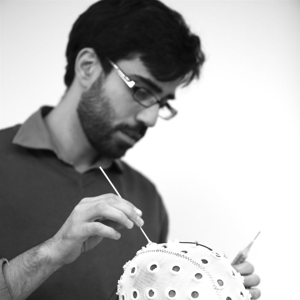

Staff members


PhD students

Wayne Anderson | Wayne is investigating the role of phase - in the brain and in the environment - and the role that phase plays in attention. Wayne is using a mixture of methods including non-invasive brain stimulation, EEG and behaviour.

Lola Zao-Sanders | Lola is investigating embodied cognition and is particularly interested in the role of emobidied cognition in perspective taking. Lola is using a mixture of methods including non-invasive brain stimulation, EEG and behaviour.
MSc by Research Students

Studying the role social media plays in affecting our attention.

Studying tactile attention in an ADHD population.

Studying tactile perception in virtual reality.
Interns and Assistants
Alesia Cyrbja
Bobbie Maria Gallagher
Alumni
Maryam Al-Abdulla (PhD Memory and Ageing)
Lianne Keighery (Research Assistant)
Petter Moller (MSc by Research in Cognitive Neuroscience)
Maciej Malinowski (MSc by Research in Cognitive Neuroscience)
Nicola Lloyd (MSc by Research in Cognitive Neuroscience)
Themis Efthimiou (MSc by Research in Cognitive Neuroscience)
Nimat Ahmed (intern)
Jack Moore (RA)
Arianna Amoroso (Dissertation project student & RA)
Joanna Szymczak (Dissertation project student & RA)
Enida Csiszer (Dissertation project student & RA)
Berivan Oztas (Dissertation project student)
Anthony Tipple (PhD student & RA)
Oriane Chene (intern, MSc Biosciences, ENS de Lyon)